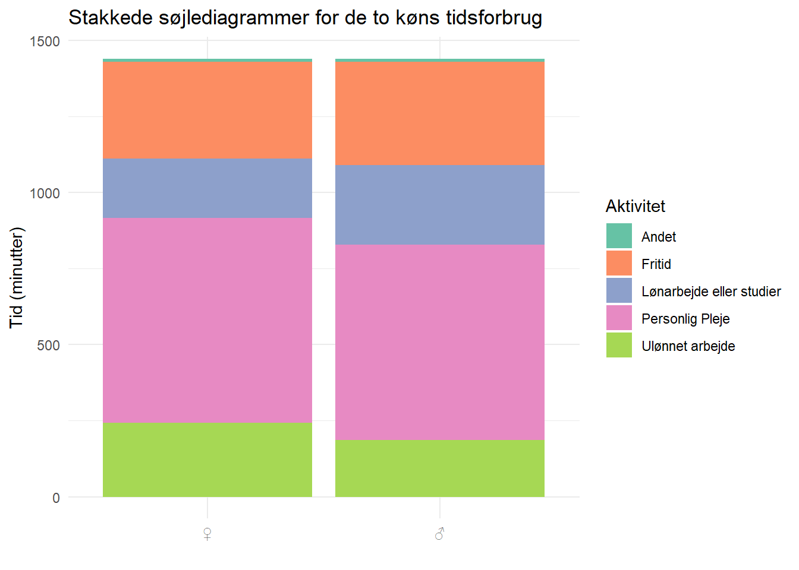
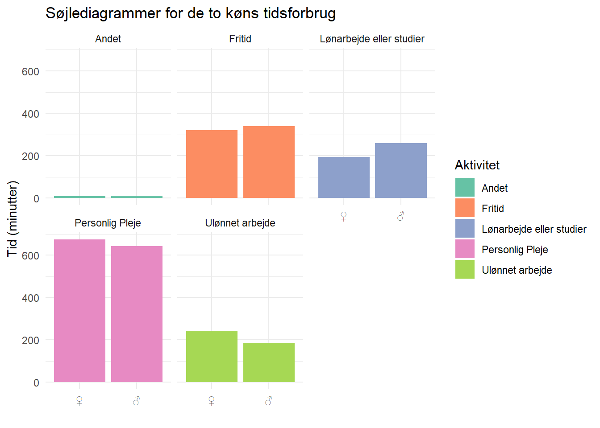

library(tidyverse)Stakkede barcharts
Af kønsopdelt tidsforbrug i Danmark
R
ggplot
Hvordan laver man et stakket barchart?
Vi starter som sædvanlig med at indlæse biblioteker:
Vi skal også bruge noget data. Vi smutter forbi OECDs data for folks tidsforbrug pr dag på ting i forskellige lande.
Og så hiver vi fat i deres “Developer API, henter url’en til et data query, og sætter lidt ekstra på;”&format=csvfilewithlabels” for at få resultatet i et format der ikke kræver utroligt meget arbejde at hive data ud af.
url <- "https://sdmx.oecd.org/public/rest/data/OECD.WISE.INE,DSD_TIME_USE@DF_TIME_USE,1.0/all?dimensionAtObservation=AllDimensions&format=csvfilewithlabels"Den kan vi indlæse direkte:
df <- read_csv(url)Rows: 494 Columns: 20
── Column specification ────────────────────────────────────────────────────────
Delimiter: ","
chr (15): STRUCTURE, STRUCTURE_ID, STRUCTURE_NAME, ACTION, REF_AREA, Referen...
dbl (3): OBS_VALUE, DECIMALS, UNIT_MULT
lgl (2): Sex, Observation value
ℹ Use `spec()` to retrieve the full column specification for this data.
ℹ Specify the column types or set `show_col_types = FALSE` to quiet this message.Specifikationen af kolonner afslører at der er en del af dem vi ikke rigtig har brug for, så dem sorterer vi fra. Vi får tidsforbrug fordelt på køn og total. Og totalen er redundant. Lægger vi tallene for “Other” sammen for de to køn, får vi naturligvis totalen.
Så alt det sorterer vi fra:
df <- df %>%
select(Country = `Reference area`, Measure, Sex = SEX, time = OBS_VALUE) %>%
filter(Sex != "_T")Der er meget data, så lad os nøjes med at kigge på Danmark. OECD foretrækker eksonymet (fordi de er nogle lingvistisk hegemoniske kolonialister). Så det er “Denmark” vi skal have fat på.
Så vi filtrerer for kun at få Danmark med, ændrer M og F til ♂ og ♀. Og oversætter de forskellige aktiviteter til dansk. Mon ikke “Personal care” indeholder en del søvn? Vi kalder det her “Personlig pleje”. Jeg plejer at sove, og det er noget jeg gør personligt:
df <- df %>%
filter(Country == "Denmark") %>%
mutate(Sex = case_match(Sex,
"M" ~ "♂",
"F" ~ "♀️",
.default = Sex)) %>%
mutate(Measure = case_match(Measure,
"Leisure" ~ "Fritid",
"Paid work or study" ~ "Lønarbejde eller studier",
"Other" ~ "Andet",
"Unpaid work" ~ "Ulønnet arbejde",
"Personal care" ~ "Personlig Pleje",
.default = Measure))Og så kan vi lave søjlediagrammet.
Vi styrer tingene to steder i koden. I aes() fortæller vi hvad der er på x- og y-akserne. Farvelægningen styres samme sted (husk fill i stedet for color), og med den får vi samtidig grupperet vores data - og det bruges i geom_col. Her specificerer vi nemlig at det skal stakkes. Vi kunne også have skrevet “dodge”, men målet var et stakket søjlediagram, så…
Hvorfor geom_col i stedet for geom_bar? geom_bar foretager som default en statistisk transformation på data, hvor den tæller antallet af observationer. Nu var det ikke antallet af observationer af tidsforbrug vi ville have (de er nemlig ens), men tallene selv. geom_col laver ingen transformation. Vi kunne også have givet geom_bar argumentet stat = "identity", det havde for de fleste praktiske formål givet samme resultat.
Og så justerer vi på labels i plottet, fjerner clutter fra default temaet, og justerer på farverne:
df %>%
ggplot(aes(x = Sex, y = time, fill = Measure)) +
geom_col(position = "stack") +
labs(
title = "Stakkede søjlediagrammer for de to køns tidsforbrug",
x = "",
y = "Tid (minutter)",
fill = "Aktivitet"
) +
theme_minimal() +
scale_fill_brewer(palette = "Set2")
Bum. De to søjler er her, helt naturligt, lige høje, for der er ikke forskel på hvad de to køn har af tid i løbet af en dag.
Det er dog lidt vanskeligt at sammenligne. Det er en af udfordringerne med stakkede søjler.
I stedet kan vi dele det lidt op. Vi vælger position = "dodge" for at få søjlerne ved siden af hinanden, ændrer på titlen, og tilføjer facet_wrap(~Measure) for at få et plot for hver type aktivitet der bruges tid på:
df %>%
ggplot(aes(x = Sex, y = time, fill = Measure)) +
geom_col(position = "dodge") +
labs(
title = "Søjlediagrammer for de to køns tidsforbrug",
x = "",
y = "Tid (minutter)",
fill = "Aktivitet"
) +
theme_minimal() +
scale_fill_brewer(palette = "Set2") +
facet_wrap(~Measure)
Bum-bum.
Konklusioner? Den eneste jeg tør drage er, at sammenligninger i stakkede søjlediagrammer kan være vanskelige.